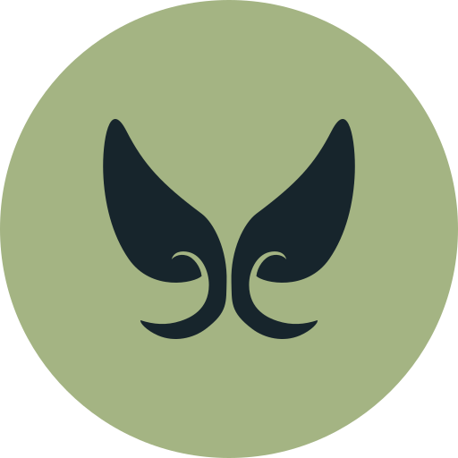

A desktop in your browser. Windows, files, a terminal and 40+ apps.
Offline PWA · your files stay on your device · Svelte 5
~ › ls ~/Pictures | where size > 1mb beach.jpg 3.2 MB skyline.png 1.8 MB ~ › backup create saved webos-backup.zip · 48 MB ~ › _